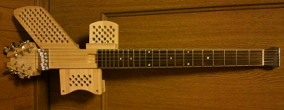
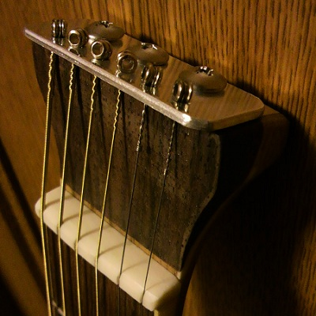
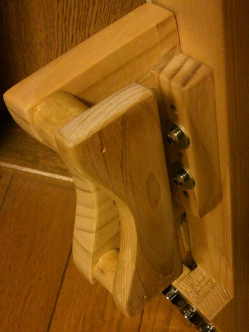
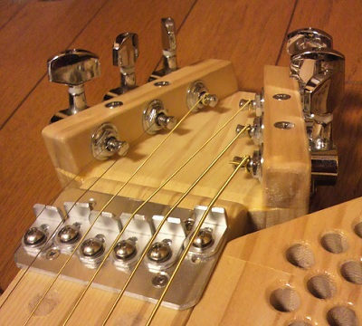

静音ギターの製作（完成編）
2012年02月03日 カテゴリー：ギター関係
先日製作した静音ギターですが、バランスが悪すぎて弾けたものではなかったため大幅に改造しました（下写真）。

ペグをブリッジ側につけましたのでバランスの問題は解消されました。ついでにボディを更に細くしています。塗装は面倒なので水性ニスを塗っただけです。
ヘッド部分は下写真のようにアルミのプレートを取り付けています。弦の角度を緩くするためにローズウッドのツキ板を付け足しましたので、茶色の部分が厚くなっています。

ウイングパーツは始めに肘と太ももが当たる部分は作っていたのですが、少し体の方へ傾いてしまう感じでした。太ももが当たるパーツに木を付け足して安定度が増しました（下写真）。

さらに腹が当たる部分のパーツを作り、ようやく完全に安定した形になりました。各ウイングパーツの取り外しも可能になっています。かえって普通のエレキギター風のボディにした方が手間がかからなかった気がしますが…
ペグが付いている部分は変わった形状になっています（下写真）。弦の角度が各弦同じになり、強度があるものを考えてみました。概ね設計通りにはできたんですが、斜めに切る精度が必要なため製作は難しかったです。やはりクラシックギターのようなスロッテッドヘッドの方が簡単だと思います。

ブリッジはアルミ材で自作しました。未だに精度よく穴あけする技術がなくて少しズレてしまいますが、気にならない程度です。
これで一応形は完成しました。まぁ見た目はショボいですが夜間練習用ということで適当です。音量は当たり前ですが小さいです。ピエゾピックアップでも取り付けてヘッドフォンアンプを使えるようにしようかなと思っています。